docker+hexo+gitee部署完美个人博客
引用
因为引用的文章在下面都说到了，可以先看看
前言
本文仅适用：x86_64架构
因为平时使用typora写文章，除了基本的MD语法之外，还使用了
- 本地图片
- mermaid
就是上面两点，导致部署hexo比较麻烦，特别是第一点。
为什么呢？
hexo新版本不是支持了本地图片吗？
但是支持的前提是：图片的文件夹和MD文件名一致，像下面这样
- xxxxx.md （MD文件）
- xxxxx （图片文件夹）
而我的图片存储方式是：
- xxxxx.md（MD文件）
- xxxxx.assets（图片文件夹）
对应typora的设置就是：
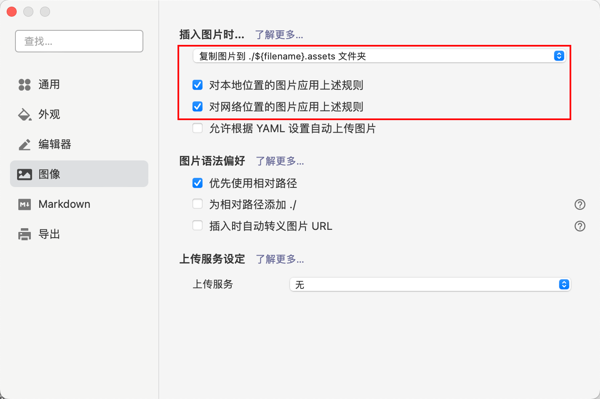所以hexo就不支持了，我就很难受
第一步：准备hexo文件
你需要准备你的所有笔记文件：比如我的是放在gitee的，大致有下面这些笔记
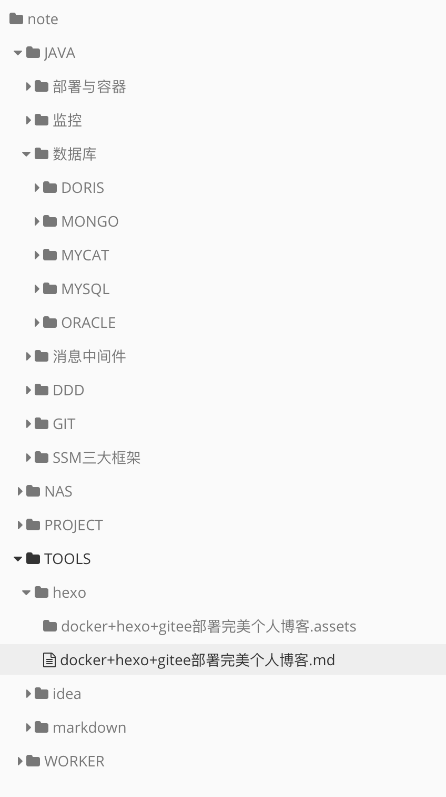然后需要准备一个hexo的主题，我推荐是 butterfly，把主题下载下来
然后需要准备hexo的配置文件_config.yml，配置好你所需要的所有内容
然后准备下面的脚本，命名为：hexo-img-move.js
const fs = require('fs-extra');
//note/xxx/xx.assets 2020/10/30/xxx/xx.assets
function copy(dir,dest){
fs.pathExists(dir, (err, exists) => {
if (exists) {
fs.copy(dir, dest, err => {
if(err)
return console.error(err);
console.log('success!');
});
}
})
}
//遍历递归public文件夹，将
function readFileList(path, filesList) {
var files = fs.readdirSync(path);
files.forEach(function (itm, index) {
var stat = fs.statSync(path + itm);
if (stat.isDirectory()) {//递归读取文件
readFileList(path + itm + "/", filesList)
} else {
var obj = {};//定义一个对象存放文件的路径和名字
obj.path = path;//路径
obj.filename = itm//名字
filesList.push(obj);
}
})
}
var getFiles = {
//获取文件夹下的所有文件
getFileList: function (path) {
var filesList = [];
readFileList(path, filesList);
return filesList;
},
};
getFiles.getFileList('/var/www/hexo/public/').forEach(function (obj){
// console.log(obj.path);
// var paths = obj.path.split('public/');
// var dir_part = paths[1];
// var dir_full = '/var/www/hexo/source/_posts/'+dir_part;
// var dir = dir_full.substring(0,dir_full.length-1)+'.assets';
var dir_part = obj.path.split('note')[1];
var dir_full = '/var/www/hexo/source/_posts/note'+dir_part;
var dir = dir_full.substring(0,dir_full.length-1)+'.assets';
//第一种：复制到 dir 的下一级目录下
var dirs = dir.split('/');
var aessets_name = dirs[dirs.length-1]
var dest1 = obj.path+aessets_name;
// 第二种：复制到 dir 同级目录下
// var dest2 = obj.path.substring(0,obj.path.length-1)+'.assets';
//第三种：复制到 public 下
var dirs = dir.split('/');
var forder_name = dirs[dirs.length-1].split('.assets')[0];
var dest_full = obj.path.substring(0,obj.path.length-1)+'.assets';
var dests = dest_full.split('/');
var dest3 = '/var/www/hexo/public/'+dests[dests.length-1];
//
///var/www/hexo/public/2022/10/30/note/JAVA/数据库/MYSQL/mysql的日志从入门到入土/
// console.log(dir)
copy(dir,dest1);
copy(dir,dest3);
})
第二步：准备dockerfile
将下面的文件 命名为：Dockerfile 没有后缀名
FROM node:14-alpine
WORKDIR /var/www/hexo
RUN echo "Asia/Shanghai" > /etc/timezone \
&& echo "https://mirrors.aliyun.com/alpine/v3.9/main/" > /etc/apk/repositories \
&& npm config set registry https://registry.npm.taobao.org \
&& apk add --no-cache git \
&& apk add --no-cache openssh-client \
&& npm install hexo-cli -g \
&& hexo init \
&& npm install hexo-renderer-swig \
&& npm install \
&& npm install fs-extra --save
&& npm install hexo-deployer-git --save \
&& npm install hexo-renderer-jade hexo-generator-feed hexo-generator-sitemap hexo-browsersync hexo-generator-archive --save \
&& npm install hexo-filter-mermaid-diagrams --save \
&& npm install hexo-blog-encrypt --save \
&& npm install hexo-generator-search --save \
&& git config --global user.email "zhuansunpengcheng@qq.com" \
&& git config --global user.name "zhuansun" \
&& ssh-keygen -t RSA -C "zhuansunpengcheng@qq.com" -P "" -N "" -f /root/.ssh/id_rsa \
&& echo "StrictHostKeyChecking no" >> /etc/ssh/ssh_config \
&& cat /root/.ssh/id_rsa.pub
- 我们使用alpine作为基本镜像，因为够小，对于hexo来说，足够了
- 设置工作目录是 /var/www/hexo
- 下面就是安装git，ssh，hexo
- npm install fs-extra –save ：安装fs-extra的依赖，是为了我们的 hexo-img-move.js能正常运行
- 安装了一些hexo的插件
- hexo-deployer-git：让hexo支持直接部署到git上
- hexo-renderer-jade hexo-generator-feed hexo-generator-sitemap hexo-browsersync hexo-generator-archive：这些是为了butterfly主题支持用的
- hexo-filter-mermaid-diagrams：让hexo支持mermaid流程图（解决了我的第二个痛点）：https://www.cnblogs.com/moshuying/p/15801437.html
- hexo-blog-encrypt：加密文章，使用方法见github：https://github.com/rdou/hexo-blog-encrypt
- 说明：在http环境下不支持加密，这是因为脚本中的使用的crypto对象，有一个subtle属性只能在https环境下获取到。
- 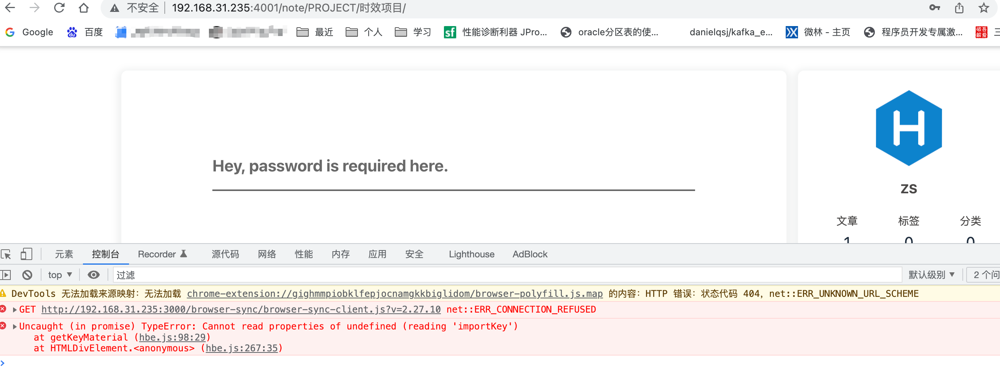
- 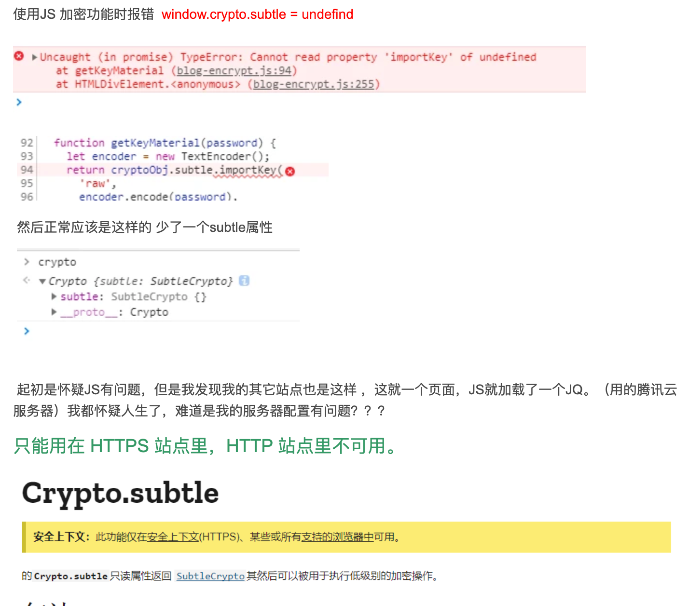
- hexo-generator-search：实现本地搜索，hexo本地搜索的实现原理是在 public 目录下，生成一个 search.xml 文件
- 设置git的邮箱和用户名，填自己的就行
- 设置ssh公钥，是为了让git提交的时候不用每次都输入密码，直接用公钥提交
- echo “StrictHostKeyChecking no” >> /etc/ssh/ssh_config \： 这一步很重要，是为了容器启动的时候，跳过ssh公钥的检查，避免手动输入yes
- cat /root/.ssh/id_rsa.pub：打印公钥
第三步：构建docker镜像
在Dockerfile的目录下，运行下面的命令
docker build -t zhuansun/hexo:v1.0 .- -t：表示指定镜像的名字和标签
- zhuansun/hexo:v1.0 : 表示镜像的名字，v1.0是标签
- . ：这个点，不知道啥意思，写上
查看构建的镜像
ash-4.3# docker image ls
REPOSITORY TAG IMAGE ID CREATED SIZE
zhuansun/hexo v1.0 71b6e1b7ea19 4 minutes ago 249MB第四步：运行容器
我用的是群辉的docker，挂载了四个目录，和一个端口
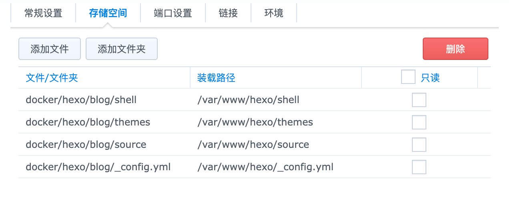 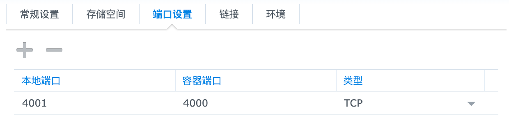其他的都是默认。然后启动
注意：
挂载的文件夹里面，要有内容哦。按照第一步，该放的都放好。
第五步：启动容器
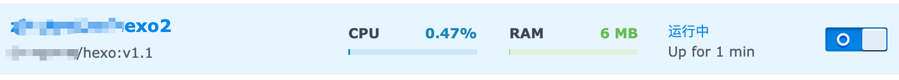第六步：使用容器
先开启群辉的ssh，然后进入到容器里面
docker exec -it xxxxxxx sh进来之后，默认就是我们设置的：/var/www/hexo
ash-4.3# docker exec -it fb29ef2559ef sh
/var/www/hexo # ls
_config.landscape.yml db.json package-lock.json public shell themes
_config.yml node_modules package.json scaffolds source yarn.lock
/var/www/hexo # hexo clean
INFO Validating config
INFO Deleted database.
INFO Deleted public folder.
/var/www/hexo # hexo g
INFO Validating config
INFO Start processing
INFO Generated: note/JAVA/数据库/MYSQL/mysql中的交集差集并集/index.html
INFO Generated: note/JAVA/GIT/git批量删除分支/index.html
INFO Generated: note/PROJECT/时效项目/index.html
INFO 73 files generated in 7.03 s
/var/www/hexo # node shell/hexo-img-move.js
success!
success!
success!
/var/www/hexo # hexo server -d
INFO Validating config
INFO
[Browsersync] Access URLs:
----------------------------------
UI: http://localhost:3001
----------------------------------
UI External: http://localhost:3001
----------------------------------
INFO Start processing
INFO Hexo is running at http://localhost:4000/ . Press Ctrl+C to stop.- 说一下 node shell/hexo-img-move.js 这一步，hexo生成静态文件之后，只有html，并没有图片的
- 如果你用的是图床，那么完全啥问题都没有
- 如果是本地图片，我们就需要把本地图片移动到指定的文件夹中
- 然后hexo server启动后，html才可以找到图片（具体怎么移动的可以看上面的代码）
第七步：本地验证hexo服务
图片可以正常显示
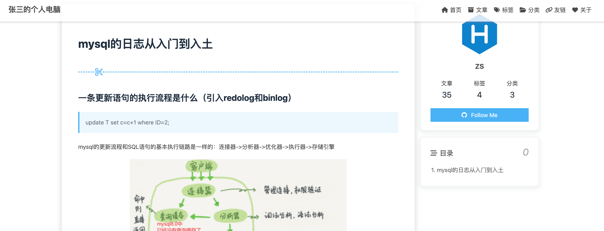代码可以正常显示
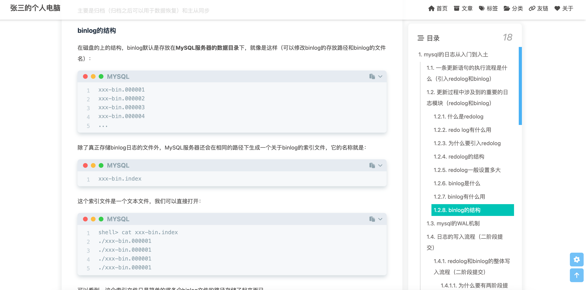时序图可以正常显示
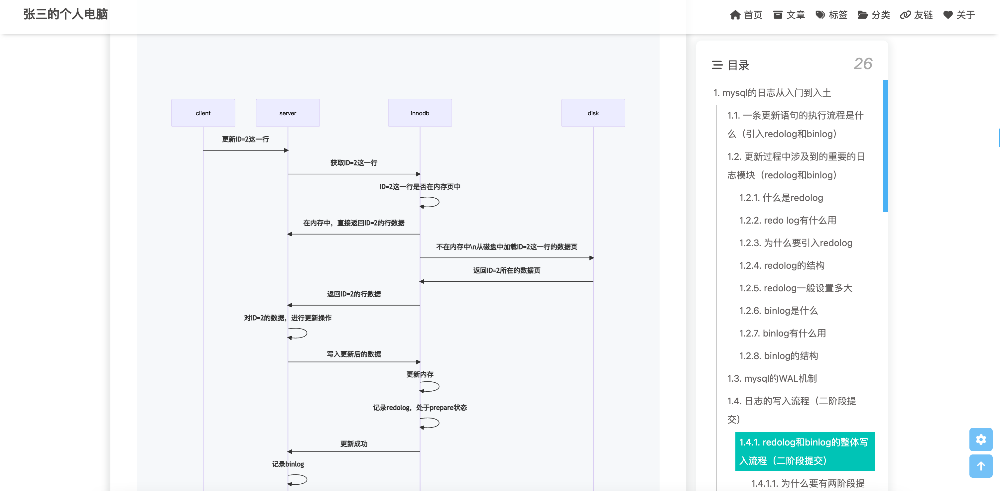第八步：部署到gitee
首先需要配置上面的公钥到gitee上，百度很简单
然后再hexo中：
/var/www/hexo # hexo d
INFO Validating config
INFO Deploying: git
INFO Clearing .deploy_git folder...
INFO Copying files from public folder...
INFO Copying files from extend dirs...
[master c3fe339] Site updated: 2022-10-30 14:31:27
Enumerating objects: 308, done.
Counting objects: 100% (308/308), done.
Delta compression using up to 4 threads
Compressing objects: 100% (247/247), done.
Writing objects: 100% (284/284), 22.02 MiB | 1.09 MiB/s, done.
Total 284 (delta 51), reused 0 (delta 0)
remote: Resolving deltas: 100% (51/51), completed with 3 local objects.
remote: Powered by GITEE.COM [GNK-6.4]
To gitee.com:zhuansunpengcheng/zhuansunpengcheng.git
e4984bb..c3fe339 HEAD -> master
Branch 'master' set up to track remote branch 'master' from 'git@gitee.com:zhuansunpengcheng/zhuansunpengcheng.git'.
INFO Deploy done: git提交成功之后，到gitee上，开始gitee page服务
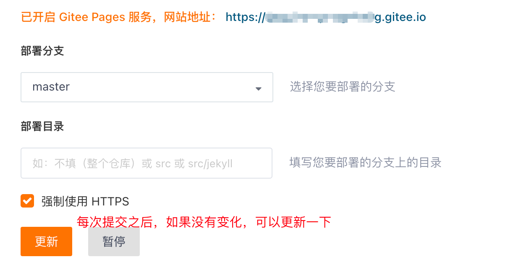然后就可以使用了
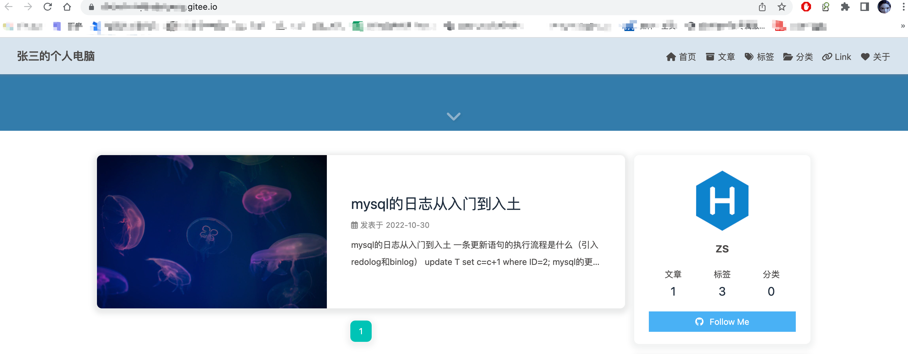